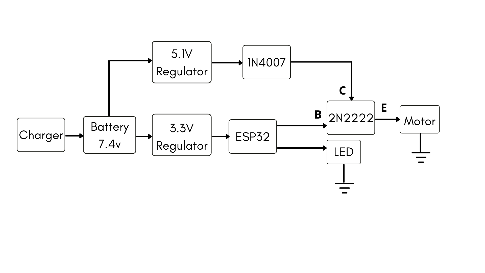
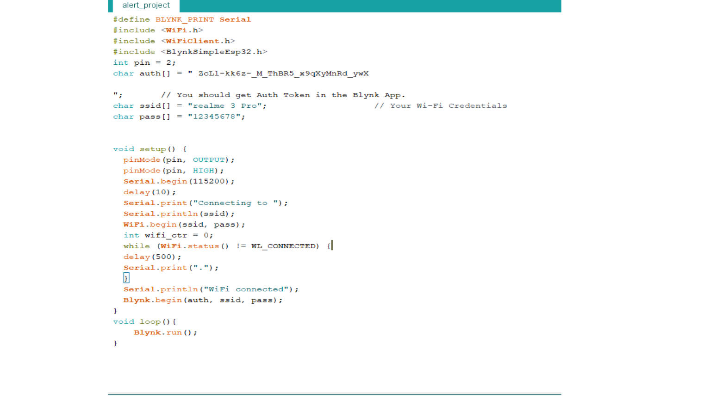

WEEK 1
April 10 2021
On the first day, we got a brief description by our mentor about the requirements needed in the alert system.We got an overall idea and he ask us to draw the circuit diagram.After showing him the circuit diagram he mentioned some changes which can be made. After all those corrections, we assembled the circuit on PCB according to it. A battery of 7.4 Voltage ws connected to regulator to obtain 3.3 V and 5.1 V. The 5.1 V to diode IN007 ans 3.3 V to the ESP32 .The motor was programmed by ESP 32 and using transistor. The different cricuits were done for an experimentation/study purpose.The esp32 controlllig process was initially tried with an on/off sign ,then with an LED and then with motor control and Blynk app interface.
Project Specifications
- Portable
- Economical
- Simple UI
Components Listed
- ESP 32
- transistor 2N2222
- 3.3V regulator
- Battery
- Motor
- Charger
We did trial with blynk app .
Then we were upto setting milestones and prepared a plan of tasks to be done on coming weeks.Then we splitted up the works according to our fields.The circuit was tested using an interface created on Blynk app.The application activates the alert device at a preset time for a preset duration .Using the arduino IDE the code to enable control over the circuit using ESP32 and the blynk app has been used to control the device using a mobile application.
- Electronic Assembling.
- cad modelling in fusion 360
- Printing and assembly
- Testing and feddback collection.
- documentation.
MILESTONES